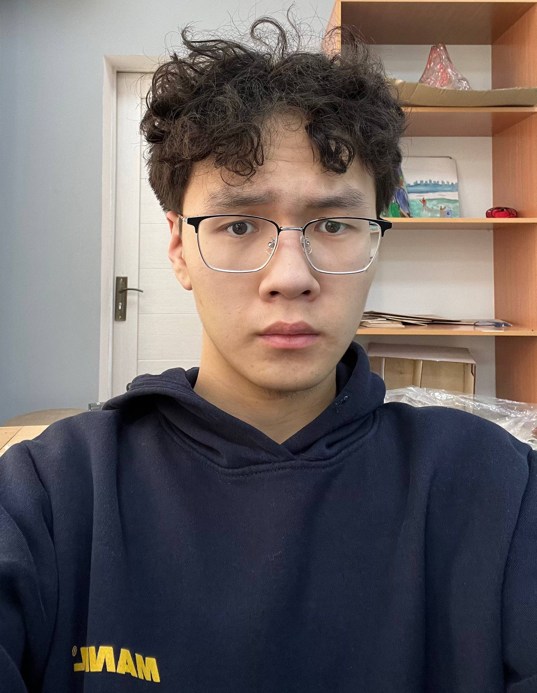
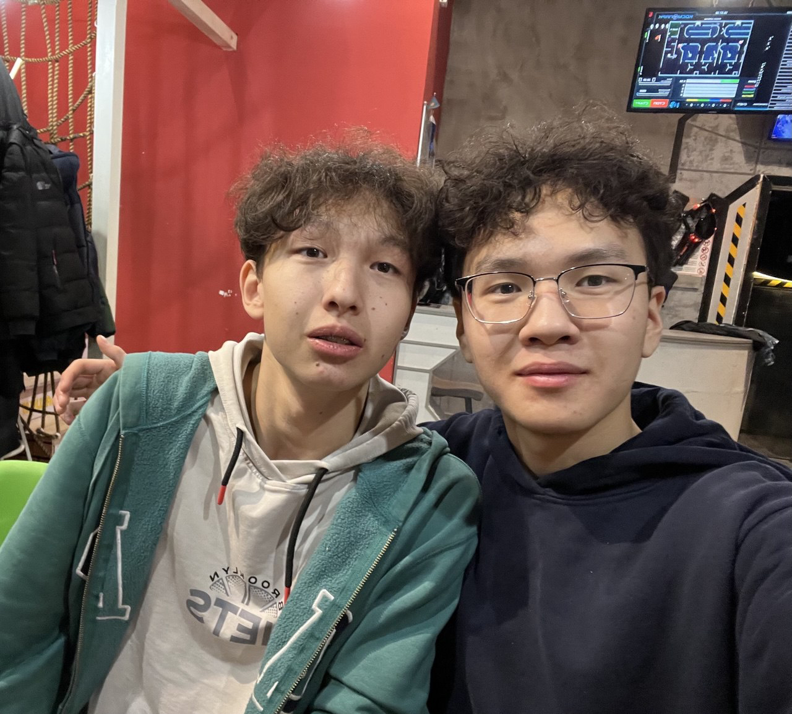

The "Aha!" Moment
We are martial arts practitioners, and we noticed a huge problem in our gyms. Beginners constantly memorize basic movements incorrectly. Fixing a bad habit that is already built into your muscle memory is 10 times harder than learning it right from scratch.
Our Solution: We built a mobile app that acts as your personal coach. You set up your phone, perform your throw entry, and our AI "sees" your skeleton and tells you exactly what to fix in real-time.
What It Actually Does
- Live Skeleton Tracking: The app overlays a digital skeleton on your body while you move.
- Voice Feedback: The app speaks to you: "Straighten your back!" or "Drop your hips lower!"
- Visual Cues: If you are doing it right, the screen flashes Green. If you make a mistake, it flashes Red.
- Gamification: Did 50 perfect entries? Unlock a new virtual "belt" in your profile.
Under the Hood (Tech Reqs)
We use proven, accessible technology to make this happen:
- Core Language: Python (perfect for data and AI logic).
- Computer Vision: Google's MediaPipe library tracks 33 joint landmarks on the human body using just a standard smartphone camera.
- The Math: We write algorithms to analyze the angles between your joints.
- Web & Hosting: The homepage is built with HTML5 & CSS3 and deployed via GitHub Pages. Code is stored in a public GitHub repository.
Early Sketches & Prototype
Here is a sneak peek of what the interface will look like. Clean, focused, and distraction-free.
Timeline & Future Vision
Our roadmap to bringing the pocket Sensei to life:
- Month 1: Train the AI on basic Judo throws (Seoi-nage, O-goshi).
- Month 2: Build the MVP and refine skeleton tracking algorithms.
- Month 3: Closed beta testing in our local gym.
Reveal Charity & Future Plans 🚀
Once the Judo module is perfected, we plan to expand the AI to Boxing and Weightlifting. Furthermore, we will introduce a charity component: giving free premium access to martial arts schools in remote villages so kids can train safely without an expensive coach.
Meet the Squad
A small but mighty team combining our passion for IT and sports.

Kadyr Nurken
Visionary / UI DesignI came up with the core concept and I'm responsible for how the app looks and feels.

Madi
Co-creator / ResearchI work alongside Kadyr to map out the logic of the project and test our ideas in the real world.

Nariman Mursalimov
Technical Sponsor / CodeA hackathon winner and versatile developer. From building websites to programming Arduino robots, he has a solid grasp of multiple coding languages and knows exactly how to get things done.